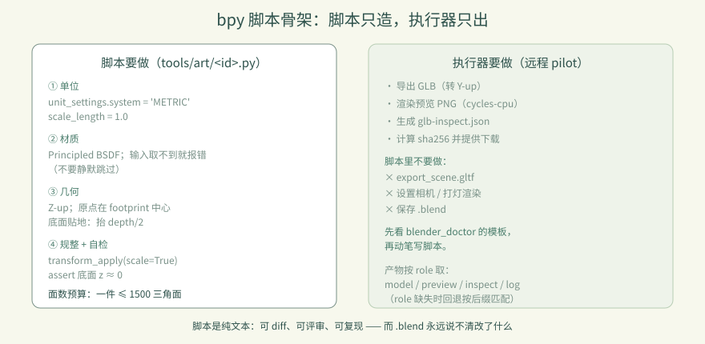
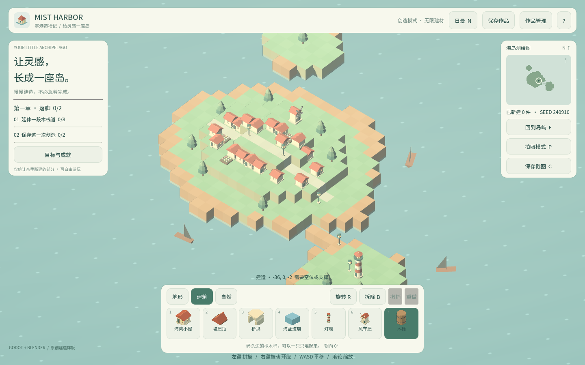
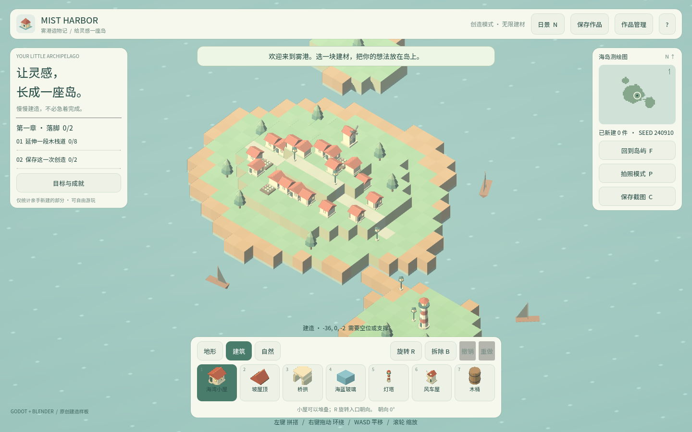

卷 3 · 第 14 章 bpy 脚本：米制、Z-up，只建几何
本章目标：掌握建模脚本与执行器之间的契约——
写什么、不写什么，以及一个"看起来能跑但放进游戏就错位"的脚本错在哪。
对应任务：T09–T15（资产） | 对应文件：tools/art/barrel.py、tools/art/*.py
14.1 契约：脚本只负责"造"，不负责"出"
远程执行器（第 15 章）会跑你的 bpy 脚本，然后它自己导出 GLB、渲染预览。
所以脚本必须遵守四条约定：
| 约定 | 内容 |
|---|---|
| --- | --- |
| 米制 | scene.unit_settings.system = 'METRIC'，scale_length = 1.0 |
| Z-up | 高度沿 +Z（Blender 原生），执行器负责转 Y-up 给 glTF |
| 原点在 footprint 中心 | 这样放进游戏格子时对齐的是底面中心 |
| 基座贴地 z=0 | 底面必须正好在 z = 0，不能悬空也不能陷进去 |
脚本里不要做的事：导出 GLB、设置相机、打灯渲染、保存 .blend——这些是执行器的活。
14.2 逐段读 barrel.py
import bpy
from mathutils import Vector
scene = bpy.context.scene
scene.unit_settings.system = 'METRIC' # ① 米制
scene.unit_settings.scale_length = 1.0def material(name, base_color, roughness, metallic):
mat = bpy.data.materials.new(name)
mat.use_nodes = True
bsdf = next(node for node in mat.node_tree.nodes if node.type == 'BSDF_PRINCIPLED')
for socket_name, value in {...}.items():
socket = bsdf.inputs.get(socket_name)
if socket is None:
raise RuntimeError(f'Required Principled BSDF input missing: {socket_name}')
socket.default_value = value
return mat② 这段有个很值得学的设计：socket is None 时直接抛错，而不是静默跳过。
不同 Blender 版本的 Principled BSDF 输入名会变——静默跳过会得到"材质丢了但脚本说成功"，
显式报错则让问题暴露在执行端。
bpy.ops.mesh.primitive_cylinder_add(vertices=16, radius=0.28, depth=0.7,
location=Vector((0.0, 0.0, 0.35)))③ location.z = 0.35：圆柱原点在几何中心，高 0.7，所以要抬一半 → 底面正好在 0。
for obj in (body, lid, ...):
bpy.ops.object.select_all(action='DESELECT')
obj.select_set(True)
bpy.context.view_layer.objects.active = obj
bpy.ops.object.transform_apply(location=False, rotation=False, scale=True)④ 应用缩放：primitive_*_add 之后若有非 1 缩放，导出时法线/尺寸都可能出问题。
bottom = min((body.matrix_world @ Vector(corner)).z for corner in body.bound_box)
assert abs(bottom) < 1e-6, f'barrel must sit on z=0, got {bottom}'⑤ 自检断言：把"贴地"这条契约写成代码。不写它，错位只会在游戏里才被发现。

14.3 面数预算
本实训的定位是低模：
| 资产 | 三角面 |
|---|---|
| --- | --- |
木桶 barrel | 632 |
| 存量 8 件 | 数百量级 |
经验值：一件道具控制在 ≤ 1500 三角面。
圆柱 vertices=16 已经是很好的平衡——再高肉眼看不出，再低会有明显棱角。
📌 面数不是"越低越好"，而是"看不出来就该降"。用预览图（执行器会给）判断。
14.4 命名与组织
- 脚本：
tools/art/<id>.py，<id>与palette.json的id、GLB 文件名三者一致 - 对象名：
BarrelBody/BarrelBand0… 有语义，方便在 Blender 里排查 - 材质名：
BarrelWood/BarrelBand，导出后成为 Godot 里的材质槽
🌩 在云端 agent（web-cb）里是什么样
| 🖥 本地路线 | 🌩 云端 agent（web-cb） | |
|---|---|---|
| --- | --- | --- |
| Blender 版本 | 本地 4.2（GUI，需手点插件） | 远程 Blender 5.2.1（无头执行） |
| 脚本契约 | 同 | 完全相同——这正是契约的价值：换执行端不用改脚本 |
| 面数/预览 | 本地看 | 云端返回 glb-inspect.json + 回导预览 PNG |
| 注意 | 本地 MCP 插件拒绝后台模式 | 云端本来就是无头，这是它最合适的用法 |
🌩 远程执行的额外好处：脚本是纯文本，天然可版本控制、可 diff、可复现——
而.blend是二进制，永远说不清改了什么。
14.5 常见坑速查（本章）
| 现象 | 原因 | 处理 |
|---|---|---|
| --- | --- | --- |
| 模型在游戏里巨大/极小 | 单位不是米 | 设 METRIC + scale_length = 1.0 |
| 模型悬空或陷地 | 原点没在底面 | 抬 depth/2，并用 assert 自检 |
| 放进格子偏半格 | 原点不在 footprint 中心 | 几何居中于 (0,0) |
| 材质全白 | BSDF 输入名取不到 | 显式 RuntimeError，别静默跳过 |
| 法线奇怪/尺寸异常 | 没 apply scale | transform_apply(..., scale=True) |
| 面数爆表 | 分段数给太大 | 圆柱 16 段，圆环 16×8 足够 |
14.6 本章作业
- 说出脚本与执行器之间的四条契约，并指出
barrel.py里各自对应哪一行 - 写一个
crate.py（木箱）：边长 0.5 m 的立方体，加两道深色边框，底面贴地，含 assert 自检 - 把
barrel.py的圆柱段数改成 32，观察面数变化，说明是否值得 - 解释为什么
socket is None要抛错而不是跳过
🎓 教学提示（给教师 / 直播主）
- 概念锚点：契约——脚本与执行器分工明确，才能换执行端不改代码。
- 课堂演示：故意删掉
location.z = 0.35，看模型陷进地面。 - 高频误解：学生想在脚本里写
bpy.ops.export_scene.gltf()。说明：导出是执行器的职责。 - 讨论题：为什么"自检断言"要写在建模脚本里？（答：错误越早暴露越便宜）
- 批改要点：作业 2 必须有单位设置、原点处理和
assert。
🖼 本章图集


📹 录屏分镜（9 分钟）
| 时间 | 画面 | 解说词要点 |
|---|---|---|
| --- | --- | --- |
| 00:00–01:30 | 四条契约 + barrel.py 头部 | "脚本只造，不出。" |
| 01:30–03:00 | 材质段的 None 检查 | "取不到就报错，别假装成功。" |
| 03:00–04:30 | location.z = 0.35 的几何推导 | "圆柱原点在中心，所以要抬一半。" |
| 04:30–05:40 | transform_apply + assert 自检 | "契约写成代码。" |
| 05:40–07:00 | 面数预算与预览图判断 | "看不出来就该降。" |
| 07:00–09:00 | 作业 + 预告（远程执行） |
🎬 视频位（待录制）
把录好的视频放到course/media/video/14/（mp4 / webm / mov），重新执行 python tools/course_build.py 即会自动内嵌；首帧默认用本章第一张截图作为封面。分镜脚本见上一节。🖼 配图清单
| 文件名 | 内容 | 生成方式 |
|---|---|---|
| --- | --- | --- |
14-game-start.png | 起始画面（新资产的落点） | python tools/course_capture.py --chapter 14 |
14-barrel-selected.png | 选中木桶（GLB 已进工程） | 同上 |
🎥 直播脚本（L3 片段，10 分钟）
- 开场："给我一个 .blend，我怎么知道你改了什么？"——引出脚本化建模
- 演示：现场写 crate.py 并提交（用第 15/16 章的管线）
- 互动：比谁的面数更低但看起来一样
- 收尾：预告远程执行
❓ 本章 FAQ
Q：为什么不用 .blend 直接入库？
A：二进制不可 diff、不可复现、依赖 Blender 版本。脚本是纯文本，可评审可重跑。
Q：Z-up 还是 Y-up？
A：脚本里按 Blender 原生 Z-up 写；glTF 标准是 Y-up，由执行器转换，你不用管。
Q：能用法线贴图/纹理吗？
A：本实训走"只建几何与材质"的纯色低模路线，不用贴图——这是风格选择，也是体积考量。